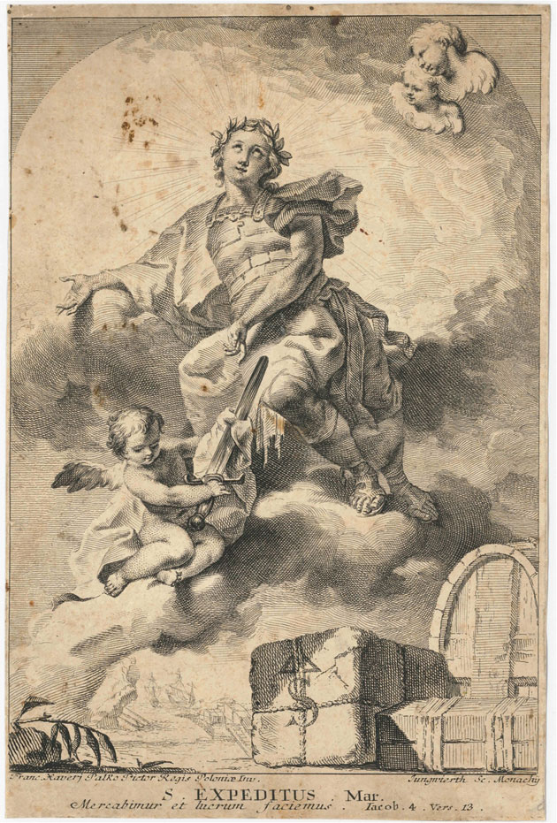

The "manufactured saint" question
Is Expedite a real saint or an accident of a shipping label? The evidence, the 1905 Vatican action, and why no clean answer survives.

The most persistent question about Saint Expedite is whether he counts as a saint at all. The honest answer is that the record is genuinely muddled — and this page is about why it is muddled, not about resolving it.
The case for skepticism
Scholarship — Three strands feed the doubt. First, the double martyrology entry: "Expeditus" is listed in the ancient Hieronymian Martyrology at both Rome (18 April) and Melitene (19 April), which the Catholic Encyclopedia's Herbert Thurston called a "copyist's blunder." Second, the Elpidius theory (Delehaye): the name may be a misreading. Third, the sheer shape of the cult — it is documented as being born in the late 18th century and exploding only in the late 19th, exactly backwards for an ancient martyr; the modern devotion clearly grew up around the name and image rather than descending from a remembered person.
The 1905 Vatican action — carefully stated
Scholarship — Around 1905, under Pope Pius X, Rome moved against the cult. This is the anchor of every "fake saint" claim — so it is worth being precise about what did and did not happen, because the popular versions are unreliable:
- No primary decree has been located. The claim rests on the secondary scholarship (Kuefler 2018), with a contemporary lead in Thurston's "Flotsam and Jetsam," The Month 108 (Dec 1905).
- It was not a martyrology deletion. The old Roman Martyrology retained the six-martyr Melitene entry after 1905. So the action targeted unauthorised images and devotions, not the martyr's name in the record.
- He was never on the General Roman Calendar in the first place, so there was no universal feast to abolish.
- The effort failed. The devotion kept growing regardless.
Refused — Any single clean date for "the Vatican removed Saint Expedite" — 1905, 1969, or 2001 — should be treated with suspicion. Sources disagree because they are describing different things (a images ruling vs. calendar revisions vs. martyrology editions). This wiki does not print one. See How we know.
Tolerated, not admitted
Documented — The result is a saint in permanent limbo. He is absent from the 2001 Martyrologium Romanum, and the standard description is "tolerated, not admitted." Yet Vatican News lists his feast, dioceses erect parishes in his name, and archbishops lead his festivals before 70,000 people. The institution neither embraces nor cancels him.
A saint of desperate causes, and a convertible image
Scholarship — Scholars group Expedite with St. Jude and St. Rita — name-and-legend-driven patrons of urgent, lost, and desperate causes, the classic products of popular canonization: a cult assembled from etymology and iconography rather than a documented life.
Scholarship — Kuefler's telling detail is how convertible the image proved: the same saint was adopted by Italian fascists as an emblem of decisive action and, in Haitian vodou, inverted — turned to curse one's enemies. Same figure, opposite polarity, depending entirely on who is holding him. That adaptability, more than any biography, is what Saint Expedite actually is.